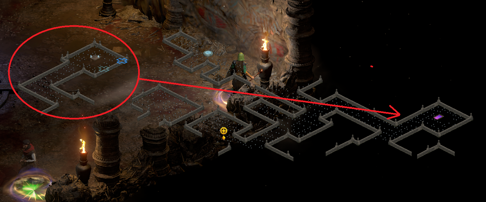
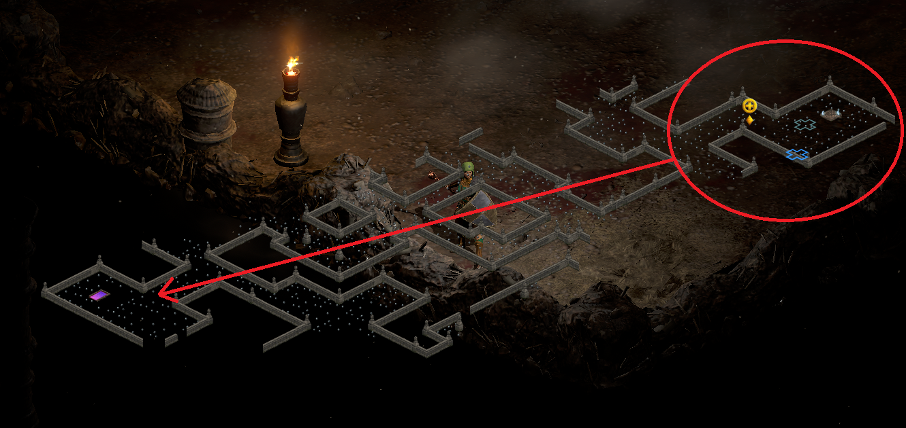
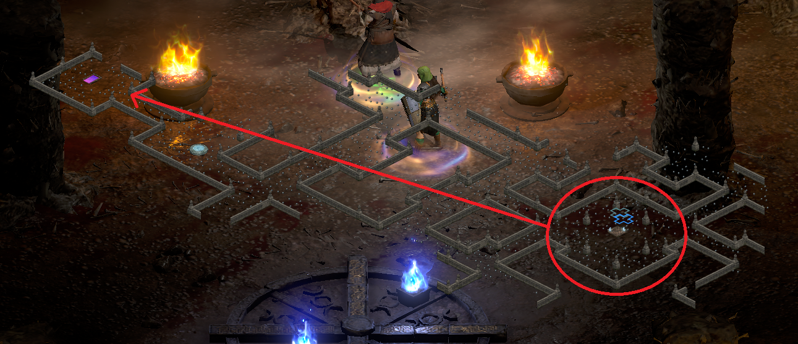

Affixes
Runes
Runewords
Areas
TC87 Areas
Run counter
XP Table
Breakpoints
Recipes
< <
>
Layouts for Halls of Pain
The Halls of Pain have 3 preset layouts. This fact allows you to ascertain where the exit is based on the appearance of the waypoint room.
Layout # 1

Layout # 2

Layout # 3
